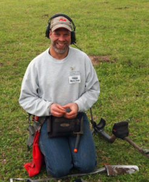

Steve's Detector
Rods
Steve's Detector
Rods

Your home of premium-quality carbon-fiber detector rods/shafts, sand-scoop handles, and other accessories for your detecting needs
About Us
Steve's Detector Rods is a small business located in Norman, Oklahoma, which was founded in early 2018. The business initially emerged from a desire to build a couple of lower rods for my own personal Minelab CTX 3030 detector. As a long-time Minelab Explorer user, I became accustomed to ease of changing coils on the Explorer as afforded by having the coils pre-attached to a separate, spare lower rod. With the price of the extra Explorer lower rods affordable enough to justify the "convenience factor", I acquired a spare rod for... read more
Our Products
Detector Rods/Shafts
Refined, used and trusted by users since 2018
Sand Scoop Handles
Premium-quality, heavy duty 46 1/2" handles
Other Accessories
Everything from rubber washers, to certified SDR merch - We've got it all
Testimonials
This year in 2018, I bought a carbon-fiber lower shaft from Steve for my CTX. When I received it, I couldn't believe how well the shaft was made, and you can't beat the price! It's by far better than the...
I can honestly attest, that not only are Steve's CTX carbon-fiber low rods much, much cheaper than factory rods, the quality, construction, and tolerances of his carbon-fiber lower rods rival their factory-built...
I bought three of Steve's lower Minelab CTX 3030 carbon-fiber replacement rods for my additional coils. They are super good quality and so much better than the field exchange of the coils...